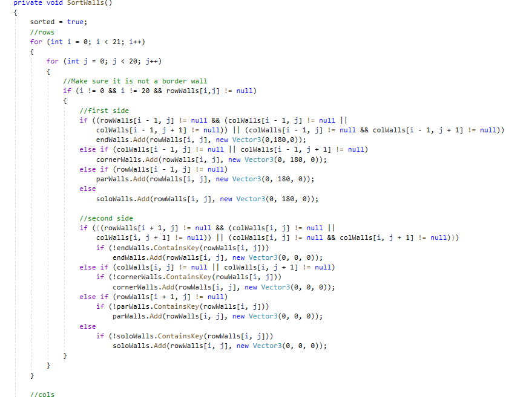
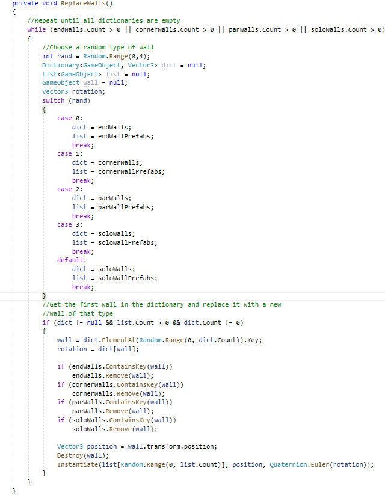
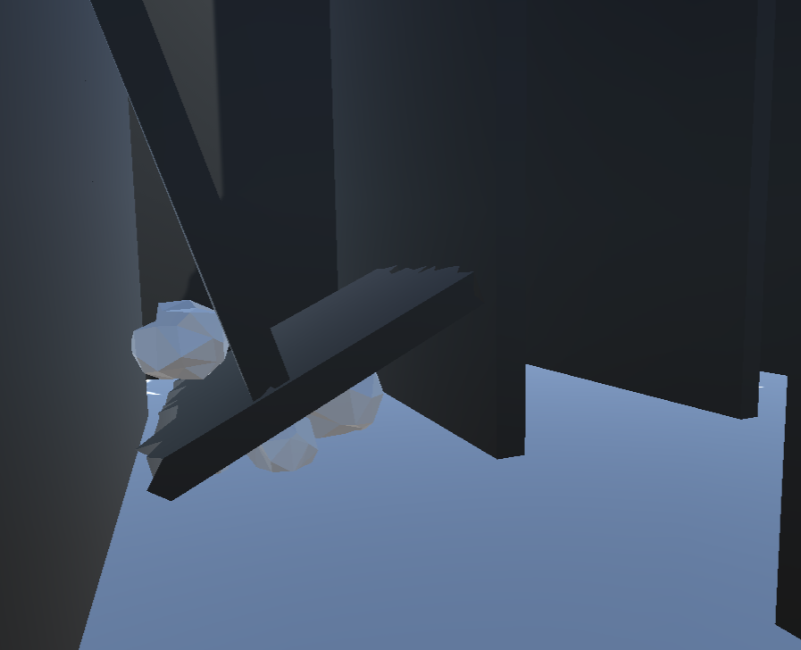
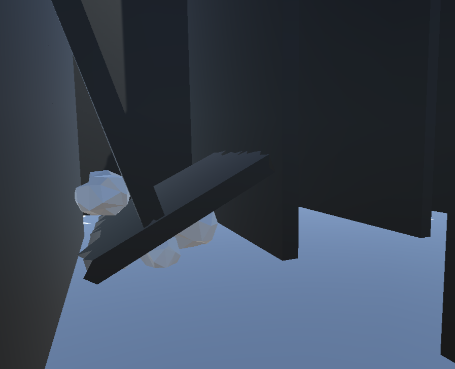

Maze Generation Algorithm
Background
In the past I had tried to make a 3D maze algorithm, but failed to do so. During my third year of college, I felt like trying again and potentionally turning it into a game. This time was much more successful as I had a clear idea in mind, whereas last time I just went in blind without researching any existing algorithms. After looking through a bunch of maze algorithms, I decided on implementing Wilson's algorithm. I chose it because the outcome looked the most similiar to what I was imagining mine would look like when finished. One thing that make this algoirthm unique compared to others is that it is unbiased. A bias in a maze generation algorithm refers to the tendency of creating a pattern or the maze favoring certain directions. Wilson's algorithm uses a random start point and then does a random walk. Once this walk hits the start point, it finalizes that walk and the cells it walked through are considered part of the maze. It then keeps repeating this (starting at a random point each time), until the maze is complete. If the walk runs into itself, it backtracks to that point and tries again. This makes it slightly inefficient since it could take numerous attempts to complete a valid path, but I believe it results in a more unique maze each time.
I also wanted to do something more interesting with this maze algorithm and decided to attempt adding different types of walls to the maze. I encoporated 2 wall variants: cracked walls and toppled walls. A cracked wall is a wall that has a large crack in the baze of it, allowing whoever is in the maze to walk through the crack, potentially making a shortcut. A toppled wall is a wall that is broken in half and collapsed over the path. This does not block movement, but instead acts as a landmark and an obstacle to crawl under. This idea, while it seems simple, was way harder than I originally anticipated.
Challenges
When implementing the base algorithm, I was not expecting to encounter any challenges, since I did the research and already knew how it functioned. However, one thing that ended up being more challenging than expected was making the physical path. In the example gif above, space is just cleared for whever the algorithm 'walks', but when implenting this in a tangible setting its not so simple. To make sure walls appeared where they need to, I first instantiated a wall on every single edge, this makes a grid when looking from above. This is where the challenge came in: removing walls that the path walks through. While I found the solution I would use quite quickly, there turned out to be a lot of edge cases. When I instatiated all the walls, I would add them to 2 seperate multidimensional arrays, depending on whether they were a horizontal or vertical wall. Then depending on the direction the path advanced, I would remove the walls from the opposite direction. If the path is 1 tile long, or the last tile in the branch I would need to remove more than 1 wall. This edge case was easy to solve once I figured out what the issue was, but when I'm just looking at maze with some closed-off sections, it can be hard to tell why the maze generated the way it did.
Another challenge came with my unique walls idea. When I first started implemnting this, I thought that it would be as simple as just replacing a random amount of walls with my unique walls and then making sure they were rotated correctly. However, it turned out to be way more complicated than this. The cracked walls were easy, since they would make sense and look normal on any wall. The toppled walls were different though. It wouldn't make sense from a game design pespective if a toppled wall generated on or next to an 'end wall' (A wall that is at the end of a path) or a corner wall (walls that form a right angle). So to avoid placing toppled walls in these locations, I had to sort all the walls depending on their surroundings. But there's a catch! Walls have 2 sides, with a path on either side. A wall could be an 'end wall' on one side but a normal 'parallel wall' on the other. I had to find a solution to this problem, that sorted the walls, but I didn't want a solution that was biased towards a direction or wall-type. So, here was my solution:

I would save the type on both sides of the wall in dictionaries, saving the wall as the key, and the rotation for that side of the wall as the value. I would then randomly choose a type of wall, grab the first wall out of the dictinary, replace it with the random type, and remove it from all other dictionaries. This solution allows me to place a wall that makes sense in it's location, without favoring a type or direction.
What I Learned
My biggest takeaway from this project is research and planning. For algorithmic problems, researching your options is very important, and it is why I failed in the past. These algorithms seem very simple and easy on paper, but actually implementing them can be hard. Lots of edge cases and scenarios you didn't envision can arise. Adding a personal touch can conflict with the very nature of the problem. This is why planning out an algorithm beforehand can be helpful. I often get lazy with comments, and this project has thorougly reminded me why they are so important. With so many edge cases and loops present, I often found myself getting lost in my own code. More descriptive and plentiful comments allowed me to fix problems faster. Overall, this project was a lot of fun and provided a good challenge for me. I'm glad I took the chance to try again at a maze algorithm, and in the future I might decide to use this as a basis for a game.
Project Images
 
